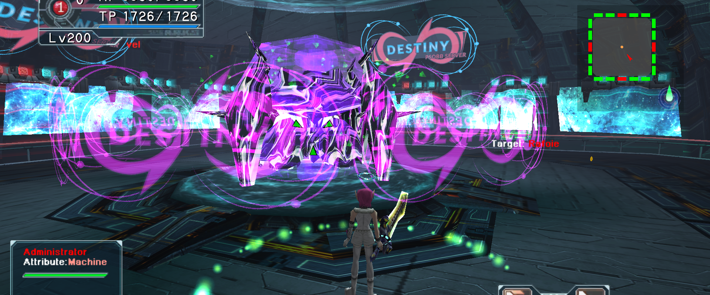

The Starlight Tower
Required setup, reward links and a practical Administrator briefing. Official facts and player observations are separated below.
Content checked · 2026-09-10

Required before entering
Official raid instructions require psobbw.exe (widescreen); 4:3 is unsupported. Use the fastest message speed. Confirm your party’s calls and assigned corners before entering.
Rewards and material planning
DIVINE BLADE and DIVINE FIELD are the main linked rewards. DIVINE FIELD requires level 200; check its recipe before treating it as a direct drop. The two items together change DIVINE BLADE’s targets and speed.
Administrator · player observations
The following notes summarize the community strategy thread checked September 10. They are a briefing, not a complete or officially verified timing script. Watch the raid’s tells and follow your party leader’s calls.
Thunder Labyrinth Sigma
The thread groups six variants into the calls “Middle Safe” and “Middle First”. Read the floor’s 1/3/5 versus 2/4 pattern, wait for the lightning, then move with your assigned corner. Do not assume every variant shares one fixed safe tile.
Cyclonic Wave
The shared strategy moves right along the outer square after the center and corner explosions. Confirm the direction with the group before pulling; moving early or cutting through the center is a different route.
Divine Reckoning
The thread calls for repeated Resta while the orb rises, then a response to the central lightning. Maintain full HP and agree who handles healing. HP-draining gear can complicate patterns that expect full HP.
Patterns still needing a verified walkthrough
Creation Queen, Rollback, Divine Cross, Fatal Sequence, Lightning Storm and Venom Bloom still need complete phase-by-phase documentation here. Use the original thread and party practice; these names alone are not sufficient instructions.